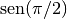

Importar librerías¶
Python posee un gran variedad de librerías para todo tipo de usos, desde la creación y apertura de archivos en cualquier sistema operativo hasta la extracción de datos en archivos de Word o Excel, pasando por el manejo y análisis de enormes cantidades de información provenientes de la bolsa de valores o de experimentos astronómicos, climáticos o biológicos.
La ventaja de Python sobre otros lenguajes de programación es que posee un avanzado mecanismo para importar librerías o comandos específicos de alguna de ellas, lo que hace muy sencillo usarlas para beneficio del programador. A continuación veremos las distintas formas en que puede hacerse esto.
La primera opción, y la más sencilla, es usar el comando import seguido del nombre la librería, así:
import math
Cuando queramos usar algún comando de la librería, debemos llamarla por su nombre seguido de .. Inmediatamente deberá aparecer una lista con las funciones que hacen parte de la misma. así:
In [88]: math. math.acos math.atan2 math.cosh math.exp math.fmod math.isinf math.log10 math.radians math.tanh math.acosh math.atanh math.degrees math.expm1 math.frexp math.isnan math.log1p math.sin math.trunc math.asin math.ceil math.e math.fabs math.fsum math.ldexp math.modf math.sinh math.asinh math.copysign math.erf math.factorial math.gamma math.lgamma math.pi math.sqrt math.atan math.cos math.erfc math.floor math.hypot math.log math.pow math.tan
Nota
De no aparecer esta lista, debe oprimirse TAB si se está en la consola o CTRL + Espacio si se está en el editor.
Como math es la librería de funciones matemáticas básicas de Python, podemos utilizarla para calcular el , por ejemplo:
In [89]: math.sin(math.pi/2) Out[89]: 1.0
Otra opción es sólo llamar un comando específico de una librería determinada. Para ello usamos la siguiente sintaxis:
from math import sin
En este caso sólo se carga el comando sin, sin cargar el resto de la librería. Esto puede ser muy ventajoso cuando la librería es grande y sólo queremos utilizar una pequeña funcionalidad de la misma. Otra ventaja es que no es necesario usar el nombre de la librería antes del comando.
In [90]: sin(3.1) Out[90]: 0.04158066243329049
Sin embargo, si queremos utilizar pi, veremos un error en la consola, porque no ha sido cargado:
In [91]: sin(pi) --------------------------------------------------------------------------- NameError Traceback (most recent call last) <ipython-input-91-338a6e05f4c1> in <module>() ----> 1 sin(pi) NameError: name 'pi' is not defined
Para no tener que escribir una línea from math import ... por cada símbolo que se desee importar, se puede usar la misma sintaxis de arriba con cada símbolo separado por una coma:
from math import sin, pi
Al cargar pi de math de esta forma, ya no veremos el error anterior:
In [92]: sin(pi/2) Out[92]: 1.0
Para llamar todos los comandos de una librería sin que estén precedidos por su nombre, se utiliza la sintaxis:
from math import *
Advertencia
Esta opción no es muy recomendable ya que los comandos de varias librerías pueden tener el mismo nombre, lo que puede resultar en serias confusiones.
La última opción es renombrar la librería al momento de importarla. Esto es una práctica bastante común, pues permite utilizar nombres cortos para las librerías, lo que hace más fácil llamarlas con el .. Para ello se usa la siguiente sintaxis:
import math as mt
De esta forma, en lugar de math sólo usamos mt, así:
In [93]: mt.sin(mt.pi/2) Out[93]: 1.0
- Ejercicios:
Importar la librería numpy con el nombre np. Después utilizar la función arange de la misma para generar una lista de números entre 0 y 1, en pasos de 0.01.
Nota
Mirar la ayuda de arange en el Inspector de Objetos para aprender como se usa.
De la misma librería anterior, importar únicamente la función linspace y la constante pi. Utilizar estas dos expresiones para generar una lista de 100 números entre 0 y
 .
.Usar la función sin de numpy para calcular el seno de los números generados por linspace en el ejercicio anterior.
Nota
- No es necesario usar un ciclo for. Mirar detenidamente los ejemplos de numpy.sin en el Inspector de Objetos.
- ¿Puede hacerse lo mismo con math.sin?
Generar una lista de 50 puntos aleatorios en 2D, usando la función rand de la librería numpy.random.